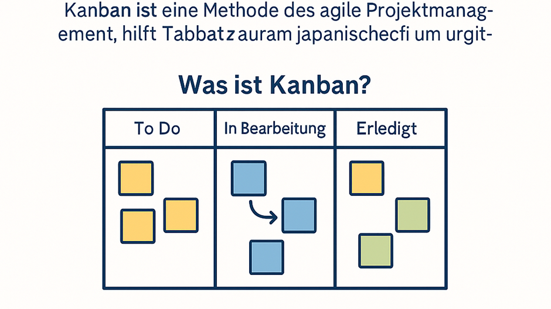

Ein Kanban-Board ist eine Tafel oder digitale Ansicht mit Spalten, die jeweils eine Arbeitsphase repräsentieren. Die einfachsten Boards haben Spalten wie To Do, In Bearbeitung (Doing) und Erledigt (Done). Alle anstehenden Aufgaben werden auf Karten (z. B. Haftnotizen oder digitale Kärtchen) notiert und zunächst in der linken Spalte „To Do“ gesammelt. Wenn die Bearbeitung startet, wandert die entsprechende Karte in die mittlere Spalte „In Bearbeitung“. Ist die Aufgabe abgeschlossen, zieht man die Karte nach „Erledigt“ auf die rechte Seite. So kann jeder im Team jederzeit sehen, welche Aufgaben anstehen, woran gerade gearbeitet wird und was bereits fertig ist – ohne lange Nachfragen.

Abbildung: Beispiel eines einfachen Kanban-Boards mit drei Spalten („To Do“, „Doing“ und „Done“).
Jede Haftnotiz stellt eine Aufgabe dar und wird nach rechts bewegt, sobald sie in Arbeit bzw. fertig ist.
Ein Kanban-Board kann physisch (etwa ein Whiteboard mit Klebezetteln) oder digital umgesetzt werden. Wichtig ist die Übersichtlichkeit: Auf einen Blick werden Engpässe erkennbar. Zum Beispiel sieht man sofort, wenn sich in der „In Bearbeitung“-Spalte viel mehr Karten stapeln als in anderen Spalten – ein Hinweis darauf, wo es hakt oder zu Verzögerungen kommt. Das Team kann dann reagieren, z. B. mehr Leute auf diese Phase ansetzen oder prüfen, warum es dort stockt. Kanban ist somit ein visuelles Steuerungsinstrument, das Transparenz schafft und hilft, Probleme im Arbeitsfluss frühzeitig zu erkennen.